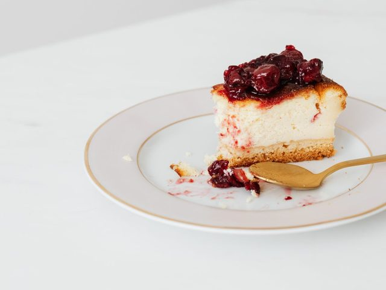
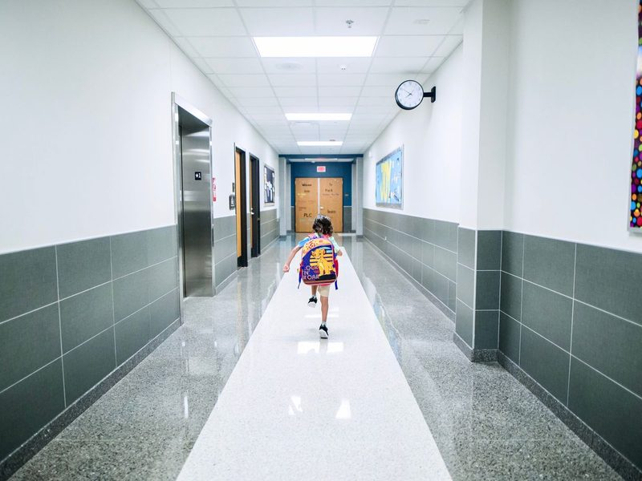
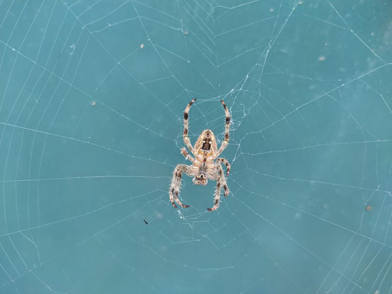

VOCABULARY · WORD UP 單字複習 UNIT 27
L-I．L 開頭（一）
WORD UP「L-I」的 37 個字（lack 到 library）。紅色＝要複習，藍色標籤＝WORD UP 標熟記、還要在這裡考對。
共 37 個單字．點 🔊 聽發音
1lackn./v.
缺乏
lack of + 名詞
Lack of sleep makes me tired.睡眠不足讓我很累。

2ladyn.
女士；淑女
複數 ladies
Ladies and gentlemen, welcome!各位女士先生，歡迎！
3laken.
湖
Sun Moon Lake 日月潭
We rode bikes around Sun Moon Lake.我們騎腳踏車環日月潭。

4lambn.
小羊；羊肉
b 不發音
The lamb is following its mother.小羊跟著媽媽走。

5lampn.
燈；檯燈
Turn on the lamp. It's dark.打開檯燈，好暗。

6landn./v.
陸地；土地；降落
The plane landed safely.飛機安全降落。
7languagen.
語言
How many languages can you speak?你會說幾種語言？

8largeadj.
大的
= big
Can I have a large Coke?我可以要一杯大可樂嗎？

9lastadj./v.
最後的；上一個；持續
last night 昨晚
The meeting lasted two hours.會議持續了兩小時。

10lateadj./adv.
遲的；晚的
be late for 遲到
Don't be late for school.上學不要遲到。
11lateradv.
稍後；後來
See you later. 待會見
See you later!待會見！
12latestadj.
最新的
Have you seen the latest phone?你看過最新款的手機嗎？

13laughv./n.
笑
laugh at 嘲笑；gh 唸 /f/
Don't laugh at others.不要嘲笑別人。

14lawn.
法律
Everyone must obey the law.每個人都必須守法。
15lawyern.
律師
My aunt is a lawyer.我阿姨是律師。
16layv.
放；下（蛋）
三態 lay-laid-laid
The hen laid three eggs.母雞下了三顆蛋。

17lazyadj.
懶惰的
Don't be lazy. Get up!別懶惰了，起床！
18leadv.
帶領；導致
三態 lead-led-led；lead to 導致
Hard work leads to success.努力帶來成功。
19leadern.
領導者
class leader 班長
Who is your class leader?誰是你們班長？
20leadershipn.
領導能力
She has great leadership.她很有領導能力。

21leafn.
葉子
複數 leaves
The leaves turn yellow in fall.葉子秋天變黃。

22learnv.
學習
learn to V
I'm learning to swim.我正在學游泳。
23leastadj./adv.
最少的
at least 至少
Drink at least eight glasses of water a day.一天至少喝八杯水。

24leavev.
離開；留下
三態 leave-left-left；leave for 前往
The train leaves at nine.火車九點開。
25leftadj./n.
左邊的；左邊
turn left 左轉
Turn left at the corner.在轉角左轉。

26legn.
腿
A spider has eight legs.蜘蛛有八隻腳。
27legaladj.
合法的
illegal 違法的
Is it legal to park here?在這裡停車合法嗎？

28lemonn.
檸檬
I like tea with lemon.我喜歡加檸檬的茶。
29lendv.
借（出）
三態 lend-lent-lent；lend A to B
Can you lend me your pen?你可以借我你的筆嗎？

30lengthn.
長度
long 的名詞
What is the length of this room?這個房間的長度是多少？
31lessadj./adv.
較少的
little 的比較級；接不可數名詞
Eat less sugar.少吃糖。

32lessonn.
課；教訓
I have piano lessons on Fridays.我星期五上鋼琴課。
33letv.
讓
三態都是 let；let + 人 + 原形
Let me help you.讓我幫你。

34lettern.
信；字母
I wrote a letter to my grandma.我寫了一封信給奶奶。
35lettucen.
萵苣；生菜
Put some lettuce in the sandwich.在三明治裡放些生菜。

36leveln.
程度；等級
This book is at my reading level.這本書符合我的閱讀程度。

37libraryn.
圖書館
I borrow books from the library.我從圖書館借書。
FOCUS
重點整理
| 說法 | 中文 | 例子 |
|---|---|---|
| lend / borrow | 借出 ／ 借入 | lend me a pen ／ borrow a pen from you |
| let + 人 + 原形動詞 | 讓某人… | Let me go. |
| laugh at | 嘲笑 | laugh at his mistake |
| at least | 至少 | at least ten minutes |
| be late for | …遲到 | late for class |
| lead to | 導致 | lead to problems |
| leaf → leaves | 葉子的複數 | green leaves |
leave 的過去式 left；lay（放、下蛋）的過去式 laid。